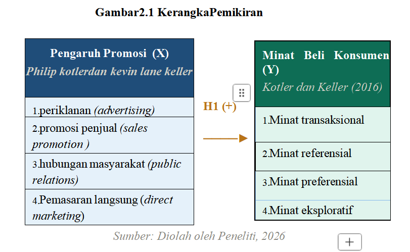
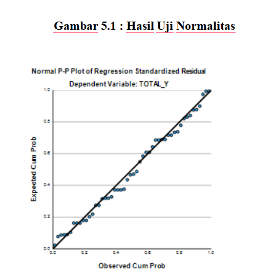

Seminar Hasil Skripsi
Anisa Fitriani
NIM: 236101222
Strategi promosi Rumah Makan Langkat masih didominasi oleh penyampaian dari mulut ke mulut (word of mouth) dan pelayanan langsung, serta kerja sama dengan instansi sekitar.
Pemanfaatan media promosi seperti iklan di media sosial, diskon penjualan, dan pemasaran langsung terstruktur masih belum dilakukan secara optimal.
Promosi offline dilakukan melalui rekomendasi pelanggan, pelayanan langsung yang baik, menjaga hubungan dengan pelanggan tetap, serta kerja sama dengan berbagai instansi.
Sejauh mana efektivitas promosi yang telah dilakukan berpengaruh terhadap minat beli konsumen?
Apakah diversifikasi kegiatan promosi dapat mendorong minat beli yang lebih tinggi?
| NO | Tahun | Client | Jenis Pekerjaan | Tukang Ahli (Orang) | Pekerja (Orang) |
|---|---|---|---|---|---|
| 1 | 2020 | PT. Lontar Papyrus Pulp & Paper Industry | Pemasangan Batu Api | 10 | 50 |
| 2 | 2021 | PT. Indah Kiat Pulp & Paper | Pemasangan Batu Api | 10 | 50 |
| 3 | 2022 | PT. Riau Andalan Pulp & Paper | Pemasangan Batu Api | 10 | 50 |
| 4 | 2023 | PT. Toba Pulp Lestari | Pemasangan Batu Api | 10 | 50 |
| 5 | 2024 | PT. PLI Surya Dumai | Pemasangan Batu Api | 10 | 50 |
| No | Tahun | Jml Kry | Gaji Pokok (Rp) | Tunj. Transport (Rp) | Tunj. Pengobatan (Rp) | THR (Rp) | Total Kompensasi (Rp) |
|---|---|---|---|---|---|---|---|
| 1 | 2020 | 50 | 1,996,273,790 | 199,627,396 | 359,329,313 | 216,133,920 | 2,771,364,419 |
| 2 | 2021 | 50 | 2,184,158,382 | 218,415,857 | 393,148,542 | 236,475,936 | 3,032,198,717 |
| 3 | 2022 | 50 | 2,131,129,530 | 203,112,972 | 351,603,350 | 221,561,440 | 2,907,407,292 |
| 4 | 2023 | 50 | 2,207,643,956 | 220,764,414 | 397,375,946 | 239,018,688 | 3,064,803,004 |
| 5 | 2024 | 50 | 2,308,557,400 | 204,855,760 | 362,740,368 | 224,275,200 | 3,100,428,728 |
Untuk menganalisis dan mengetahui seberapa besar pengaruh promosi terhadap minat beli konsumen pada Rumah Makan Langkat di Tualang Siak.
Menjadi masukan dalam keputusan merancang strategi promosi yang lebih tepat guna meningkatkan daya saing.
Menjadi bahan referensi untuk penulis sejenisnya di masa depan.
Menambah wawasan mengenai ilmiah di bidang manajemen pemasaran.
| No | Peneliti & Tahun | Judul Penelitian | Variabel | Metode | Hasil Penelitian |
|---|---|---|---|---|---|
| 1 | Ramadhan & Utami (2019) | Pengaruh promosi terhadap minat beli konsumen | Promosi (X), Minat Beli (Y) | Kuantitatif | Promosi berpengaruh positif dan signifikan terhadap minat beli konsumen |
| 2 | Tampubolon | Strategi promosi dalam meningkatkan minat beli konsumen | Promosi (X), Minat Beli (Y) | Kuantitatif | Strategi promosi yang tepat mampu meningkatkan minat beli konsumen |
| 3 | Sari & Hidayat (2020) | Pengaruh Promosi media sosial terhadap Minat konsumen Restorant di Surabaya | Promosi (X), Minat Beli (Y) | Kuantitatif | Promosi media sosial berpengaruh positif dan signifikan terhadap minat beli |
| 4 | Nugroho & Setiawan (2022) | Pengaruh iklan dan promosi penjualan terhadap minat beli konsumen UMKM Kuliner | Iklan (X1), Promosi (X2), Minat Beli (Y) | Kuantitatif | Iklan dan promosi penjualan secara simultan berpengaruh signifikan |
| 5 | Oktavia & Fauzi (2023) | Efektivitas promosi terhadap minat beli konsumen pada rumah makan di kota Pekanbaru | Promosi (X), Minat Beli (Y) | Kuantitatif Deskriptif | Promosi berpengaruh positif signifikan terhadap minat beli |
Menurut Kotler dan Keller, promosi adalah sarana penting dalam menginformasikan, membujuk, serta mengingatkan konsumen tentang suatu produk, baik melalui iklan, promosi penjualan, penjualan tatap muka, publisitas, maupun media sosial.
Promosi tidak hanya bertujuan memperkenalkan produk, tetapi juga untuk membangun citra merek dan menciptakan loyalitas pelanggan.
Ramadhan dan Utami menyatakan bahwa minat beli dapat diartikan sebagai tingkat kemungkinan konsumen untuk melakukan pembelian terhadap suatu produk dalam periode tertentu.
Minat beli muncul setelah konsumen menerima rangsangan, seperti informasi promosi, pengalaman, dan persepsi terhadap produk.

Sumber: Diolah oleh Peneliti, 2026
H₀: Tidak terdapat pengaruh positif dan signifikan antara promosi terhadap minat beli konsumen pada Rumah Makan Langkat di Tualang Siak.
H₁: Promosi berpengaruh positif dan signifikan terhadap minat beli konsumen pada Rumah Makan Langkat di Tualang Siak.
Lokasi: Rumah Makan Langkat, Kec. Tualang, Kab. Siak, Riau.
Waktu: Dilaksanakan pada tahun 2026.
Jenis Penelitian: Pendekatan Kuantitatif
Sumber Data: Data Primer & Data Sekunder
Pengumpulan Data: Angket (Kuesioner) & Dokumentasi
Populasi: ± 200 orang per hari
Sampel: 96 Responden (Teknik rumus Lemeshow)
| Jenis Kelamin | Jumlah | Persentase |
|---|---|---|
| Laki-laki | 45 | 46,87% |
| Perempuan | 51 | 53,13% |
| Total | 96 | 100% |
| Jabatan | Jumlah | Persentase |
|---|---|---|
| Pelajar/Mahasiswa | 28 | 29,16% |
| Karyawan Swasta | 26 | 27,08% |
| Wiraswasta | 22 | 22,9% |
| Lainnya | 20 | 20,8% |
| Usia | Jumlah | Persentase |
|---|---|---|
| < 20 Tahun | 15 | 15,6% |
| 20 - 30 Tahun | 55 | 57,3% |
| 31 - 40 Tahun | 15 | 15,6% |
| > 40 Tahun | 11 | 11,4% |
| Total | 96 | 100% |
Insight: Dominasi konsumen adalah Perempuan (53%) dari kelompok Generasi Milenial/Z (20-30 Tahun) dengan profesi utama sebagai Pelajar/Mahasiswa.
| Variabel | Item | r hitung | r tabel | Hasil |
|---|---|---|---|---|
| Promosi (X) | X.1 | 0,943** | 0,201 | Valid |
| X.2 | 0,945** | 0,201 | Valid | |
| X.3 | 0,923** | 0,201 | Valid | |
| X.4 | 0,939** | 0,201 | Valid | |
| X.5 | 0,964** | 0,201 | Valid | |
| X.6 | 0,925** | 0,201 | Valid | |
| X.7 | 0,961** | 0,201 | Valid | |
| X.8 | 0,950** | 0,201 | Valid | |
| Minat Beli (Y) | Y.1 | 0,944** | 0,201 | Valid |
| Y.2 | 0,940** | 0,201 | Valid | |
| Y.3 | 0,952** | 0,201 | Valid | |
| Y.4 | 0,945** | 0,201 | Valid | |
| Y.5 | 0,969** | 0,201 | Valid | |
| Y.6 | 0,961** | 0,201 | Valid | |
| Y.7 | 0,939** | 0,201 | Valid | |
| Y.8 | 0,942** | 0,201 | Valid |
Menurut Sugiyono (2019), suatu item instrumen dikatakan valid apabila nilai rhitung > rtabel. Validitas menunjukkan sejauh mana alat ukur mampu mengukur apa yang seharusnya diukur.
Menurut Ghozali (2018), kriteria pengujian validitas: Jika rhitung > rtabel pada taraf signifikansi 5% (α = 0,05), maka butir pernyataan dinyatakan Valid. Sebaliknya, jika rhitung < rtabel, maka butir pernyataan dinyatakan Tidak Valid. Nilai rtabel untuk n=96 (df=94) pada α=0,05 adalah 0,201.
Berdasarkan hasil pengujian validitas terhadap seluruh butir pernyataan variabel Promosi (X) dan Minat Beli Konsumen (Y), diperoleh bahwa seluruh 16 item pernyataan memiliki nilai rhitung yang berkisar antara 0,923 hingga 0,969, yang seluruhnya lebih besar dari rtabel sebesar 0,201 pada taraf signifikansi 5%. Dengan demikian, dapat disimpulkan bahwa seluruh butir instrumen penelitian telah memenuhi syarat validitas dan layak digunakan sebagai alat pengumpul data dalam penelitian ini.
| No. | Variabel | Jumlah Item | Cronbach's Alpha | Keterangan |
|---|---|---|---|---|
| 1. | Promosi (X) | 8 | 0,982 | Reliabel |
| 2. | Minat Beli Konsumen (Y) | 8 | 0,984 | Reliabel |
Menurut Nunnally (1994) dalam Ghozali (2018), suatu instrumen dikatakan reliabel apabila nilai Cronbach's Alpha > 0,60. Reliabilitas menunjukkan konsistensi dan stabilitas alat ukur apabila pengukuran dilakukan secara berulang.
Jika nilai Cronbach's Alpha ≥ 0,60 maka instrumen dinyatakan Reliabel. Semakin mendekati angka 1,00, semakin tinggi tingkat konsistensi internal instrumen tersebut.
Hasil pengujian reliabilitas menunjukkan bahwa variabel Promosi (X) memperoleh nilai Cronbach's Alpha sebesar 0,982 dan variabel Minat Beli Konsumen (Y) sebesar 0,984. Kedua nilai tersebut jauh melampaui batas minimum 0,60, yang mengindikasikan bahwa seluruh instrumen kuesioner memiliki tingkat konsistensi internal yang sangat tinggi (excellent reliability). Dengan demikian, instrumen penelitian ini dapat diandalkan untuk menghasilkan data yang konsisten dan akurat.

Data Terdistribusi Normal ✓
Menurut Ghozali (2018), uji normalitas bertujuan untuk menguji apakah dalam model regresi, variabel residual memiliki distribusi normal. Metode yang digunakan adalah Normal Probability Plot (P-P Plot).
Menurut Ghozali (2018), jika titik-titik pada grafik P-P Plot menyebar di sekitar garis diagonal dan mengikuti arah garis diagonal, maka model regresi memenuhi asumsi normalitas. Sebaliknya, jika titik-titik menyebar jauh dari garis diagonal, maka asumsi normalitas tidak terpenuhi.
Berdasarkan inspeksi visual terhadap grafik Normal P-P Plot of Regression Standardized Residual, terlihat bahwa titik-titik observasi menyebar merapat dan terdistribusi mengikuti arah garis diagonal utama. Hal ini menunjukkan bahwa residual model regresi terdistribusi secara normal, sehingga asumsi normalitas telah terpenuhi dan model regresi layak digunakan untuk analisis lebih lanjut.
| Model | Unstd. B | Std. Error | Std. Beta | t Hitung | Sig. |
|---|---|---|---|---|---|
| (Constant) | 3.259 | 1.924 | 1.694 | .094 | |
| TOTAL_X | .867 | .056 | .844 | 15.406 | <,001 |
Persamaan Regresi: Y = 3,259 + 0,867X
Menurut Sugiyono (2019), analisis regresi linear sederhana digunakan untuk menguji pengaruh satu variabel independen (X) terhadap satu variabel dependen (Y), dengan persamaan: Y = a + bX.
Menurut Ghozali (2018), pengujian hipotesis parsial menggunakan Uji t: Jika nilai Sig. < 0,05 atau thitung > ttabel, maka variabel independen berpengaruh signifikan terhadap variabel dependen. Koefisien b positif menunjukkan hubungan searah (positif).
Hasil analisis regresi menunjukkan nilai koefisien regresi (b) sebesar 0,867 dengan nilai thitung = 15,406 dan Sig. = <0,001 (jauh di bawah α = 0,05). Hal ini membuktikan bahwa variabel Promosi (X) berpengaruh positif dan signifikan terhadap Minat Beli Konsumen (Y). Setiap peningkatan 1 satuan skor Promosi akan meningkatkan Minat Beli sebesar 0,867 satuan. Dengan demikian, H₁ diterima dan H₀ ditolak.
| Model | R | R Square | Adjusted R² | Std. Error |
|---|---|---|---|---|
| 1 | .844ᵃ | .712 | .709 | 4.480 |
a. Predictors: (Constant), TOTAL_X | b. Dependent Variable: TOTAL_Y
Menurut Ghozali (2018), koefisien determinasi (R²) mengukur seberapa jauh kemampuan model dalam menerangkan variasi variabel dependen. Nilai R² berkisar antara 0 hingga 1. Semakin mendekati 1, semakin besar kemampuan variabel independen menjelaskan variabel dependen.
Menurut Sugiyono (2019), nilai R Square × 100% menunjukkan persentase kontribusi variabel X terhadap Y. Sisanya (100% − R²) dipengaruhi oleh variabel lain yang tidak diteliti. Nilai R menunjukkan keeratan hubungan antar variabel (korelasi).
Berdasarkan output Model Summary, diperoleh nilai R = 0,844 yang menunjukkan adanya hubungan yang sangat kuat antara Promosi dengan Minat Beli Konsumen. Adapun nilai R Square sebesar 0,712 mengindikasikan bahwa variabel Promosi (X) mampu menjelaskan 71,2% variasi pada Minat Beli Konsumen (Y), sedangkan sisanya sebesar 28,8% dijelaskan oleh faktor-faktor lain yang tidak dimasukkan dalam model penelitian ini, seperti kualitas pelayanan, harga, citra merek, lokasi, dan kepercayaan konsumen.
Berdasarkan hasil penelitian membuktikan bahwa promosi berpengaruh positif dan signifikan terhadap minat beli konsumen Rumah Makan Langkat.
Berdasarkan perhitungan Koefisien Determinasi (R²), nilai R Square adalah sebesar 0,712. Variabel Promosi (X) memberikan kontribusi sebesar 71,2% terhadap Minat Beli Konsumen.
Sisanya sebesar 28,8% dipengaruhi oleh variabel lain yang tidak diteliti (kualitas pelayanan, harga, citra merek, lokasi, kepercayaan konsumen, dll).
Tingkatkan Promosi: Diharapkan meningkatkan efektivitas kegiatan promosi, baik melalui media sosial maupun media promosi lainnya. Promosi hendaknya dibuat lebih menarik, informatif, dan dilakukan secara konsisten.
Konten Visual: Memperbanyak konten foto atau video menu yang berkualitas, memberikan informasi yang jelas mengenai menu dan harga, serta mengadakan program promosi seperti diskon, paket hemat, atau promo pada momen tertentu.
Optimasi Digital: Meningkatkan kualitas visual promosi, memperluas jangkauan promosi digital, serta meningkatkan kecepatan dan responsivitas dalam memberikan informasi kepada konsumen melalui media sosial maupun aplikasi pesan instan.
Atas Perhatian Dewan Penguji
:)